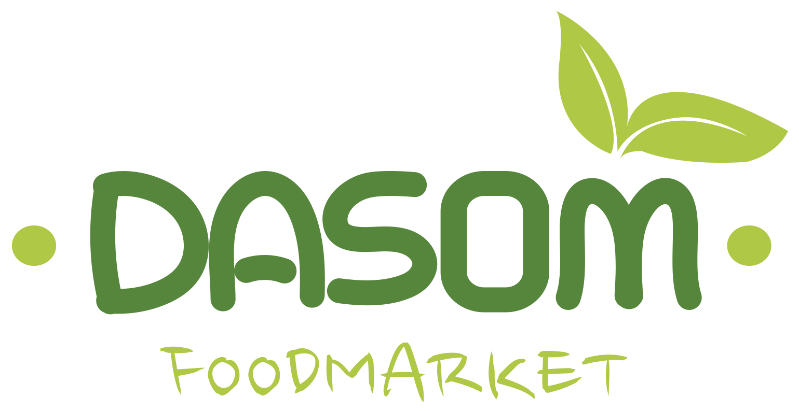

Sourcing
상품과 가능성을 발굴합니다.

DASOM INTERNATIONAL · FOOD COMMERCE
상품의 가능성을 찾는 순간부터, 브랜드가 고객을 만나는 순간까지.
다솜인터내셔널은 식품 유통의 모든 과정을 함께 설계합니다.
WE ARE DASOM
다솜인터내셔널은 식품을 발굴하고, 상품으로 기획하며, 다양한 유통 채널을 통해 고객에게 연결합니다.
오랜 식품 유통 경험을 바탕으로 상품 소싱부터 콘텐츠, 유통, 마케팅과 데이터까지 브랜드의 다음 성장을 함께 고민합니다.
DASOM BUSINESS →FROM DISCOVERY TO GROWTH
하나의 상품이 고객의 선택을 받기까지 필요한 모든 과정. 다솜은 각 단계의 경험과 실행력을 하나의 흐름으로 연결합니다.
상품과 가능성을 발굴합니다.
시장에 맞는 상품을 기획합니다.
브랜드의 이야기를 만듭니다.
최적의 채널로 연결합니다.
고객과의 접점을 넓힙니다.
다음 성장을 설계합니다.
CONNECTED COMMERCE
온라인 유통 환경에 맞춘 상품 운영과 고객 경험을 만듭니다.
↗상품의 강점을 명확하게 전달하는 판매 흐름을 설계합니다.
↗신뢰할 수 있는 파트너십으로 유통 접점을 확장합니다.
↗DASOM FOODMARKET
다솜은 식품의 본질과 고객의 일상을 함께 생각합니다. 브랜드와 상품을 통해 더 나은 식문화를 제안합니다.
LOW SUGAR SOY DRINK
SOY DRINK COLLECTION
RICH TASTE MILK
PREMIUM SEAWEED
현재 제품 이미지는 제공된 실제 상품 비주얼을 사용하고 있습니다.
WHY DASOM
식품 카테고리를 깊이 이해하는 유통 경험
상품의 강점을 브랜드 경험으로 만드는 기획력
채널 특성에 맞춰 연결하는 운영 역량
데이터와 실행으로 함께 만드는 지속적인 성장
LET'S GROW TOGETHER
새로운 상품, 브랜드, 유통에 관한 이야기를 들려주세요.
다솜은 좋은 가능성이 더 멀리 갈 수 있도록 함께합니다.
CONTACT DASOM
상품 제안, 유통 및 브랜드 협업을 위한 이야기를
언제든 편하게 들려주세요.